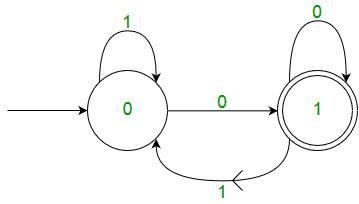

A finite automaton (FA) is a simple idealized machine used to recognize patterns within input taken from some character set (or alphabet) C. The job of an FA is to accept or reject an input depending on whether the pattern defined by the FA occurs in the input.
A finite automaton consists of:
a finite set S of N states
a special start state
a set of final (or accepting) states
a set of transitions T from one state to another, labeled with chars in C
As noted above, we can represent a FA graphically, with nodes for states, and arcs for transitions.
We execute our FA on an input sequence as follows:
Begin in the start state
If the next input char matches the label on a transition from the current state to a new state, go to that new state
Continue making transitions on each input char
If no move is possible, then stop
If in accepting state, then accept.
A finite automata consist of the following:
Deterministic Finite Automata (DFA)
In a DFA, for a particular input character, the machine goes to one state only.
A transition function is defined on every state for every input symbol.
Also in DFA null (or ε) move is not allowed, i.e.,
DFA cannot change state without any input character.
For example, below DFA with ∑ = {0, 1} accepts all strings ending with 0.

DFA consists of 5 tuples {Q, ∑, q, F, δ}.
Nondeterministic Finite Automata (NFA)
NFA is similar to DFA except following additional features:
1. Null (or ε) move is allowed i.e., it can move forward without reading symbols.
2. Ability to transmit to any number of states for a particular input.
However, these above features don’t add any power to NFA. If we compare both in terms of power,
both are equivalent.
Due to above additional features, NFA has a different transition function,
rest is same as DFA.
δ: Transition Function
δ: Q X (∑ U ϵ ) --> 2 ^ Q.
Convert NFA to DFA
Suppose there is an NFA N < Q, ∑, q0, δ, F > which recognizes a language L. Then the DFA D < Q’, ∑, q0, δ’, F’ > can be constructed for language L as:
Step 1: Initially Q’ = ɸ.
Step 2: Add q0 to Q’.
Step 3: For each state in Q’, find the possible set of states for each input symbol using transition function of NFA. If this set of states is not in Q’, add it to Q’.
Step 4: Final state of DFA will be all states with contain F (final states of NFA)
Example
Consider the following NFA shown in Figure 1.
Following are the various parameters for NFA.
Q = { q0, q1, q2 }
∑ = ( a, b )
F = { q2 }
δ (Transition Function of NFA)
Step 1: Q’ = ɸ
Step 2: Q’ = {q0}
Step 3: For each state in Q’, find the states for each input symbol.
Currently, state in Q’ is q0, find moves from q0 on input symbol a and b using transition function of NFA and update the transition table of DFA.
δ’ (Transition Function of DFA)
Now { q0, q1 } will be considered as a single state. As its entry is not in Q’, add it to Q’.
So Q’ = { q0, { q0, q1 } }
Now, moves from state { q0, q1 } on different input symbols are not present in transition table of DFA, we will calculate it like:
δ’ ( { q0, q1 }, a ) = δ ( q0, a ) ∪ δ ( q1, a ) = { q0, q1 }
δ’ ( { q0, q1 }, b ) = δ ( q0, b ) ∪ δ ( q1, b ) = { q0, q2 }
Now we will update the transition table of DFA.
δ’ (Transition Function of DFA)
Now { q0, q2 } will be considered as a single state. As its entry is not in Q’, add it to Q’.
So Q’ = { q0, { q0, q1 }, { q0, q2 } }
Now, moves from state {q0, q2} on different input symbols are not present in transition table of DFA, we will calculate it like:
δ’ ( { q0, q2 }, a ) = δ ( q0, a ) ∪ δ ( q2, a ) = { q0, q1 }
δ’ ( { q0, q2 }, b ) = δ ( q0, b ) ∪ δ ( q2, b ) = { q0 }
Now we will update the transition table of DFA.
δ’ (Transition Function of DFA)
As there is no new state generated, we are done with the conversion. Final state of DFA will be state which has q2 as its component i.e., { q0, q2 }
Following are the various parameters for DFA.
Q’ = { q0, { q0, q1 }, { q0, q2 } }
∑ = ( a, b )
F = { { q0, q2 } } and transition function δ’ as shown above. The final DFA for above NFA has been shown in Figure 2.
Note : Sometimes, it is not easy to convert regular expression to DFA. First you can convert regular expression to NFA and then NFA to DFA.
Question : The number of states in the minimal deterministic finite automaton corresponding to the regular expression (0 + 1)* (10) is ____________.
Solution : First, we will make an NFA for the above expression. To make an NFA for (0 + 1)*, NFA will be in same state q0 on input symbol 0 or 1. Then for concatenation, we will add two moves (q0 to q1 for 1 and q1 to q2 for 0) as shown in Figure 3.


 Mehmet Akif Eyler
Tutorialspoint
Mehmet Akif Eyler
Tutorialspoint